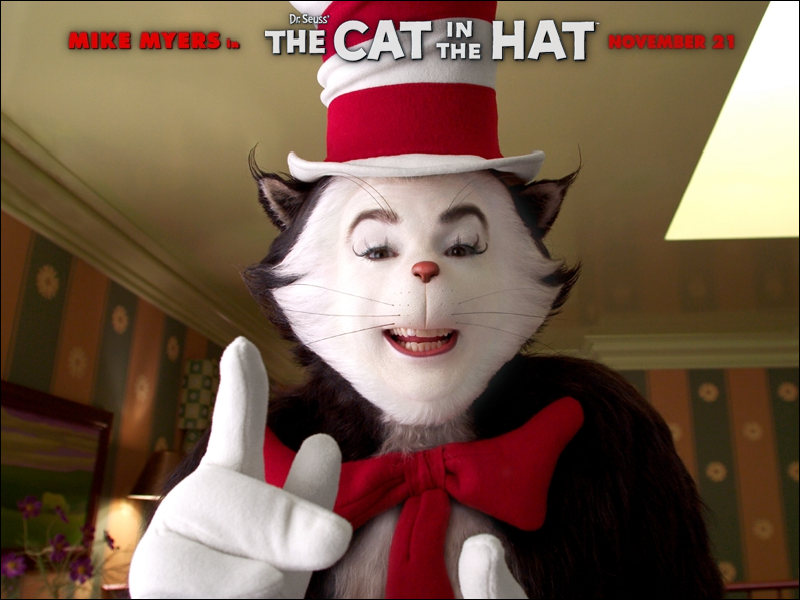
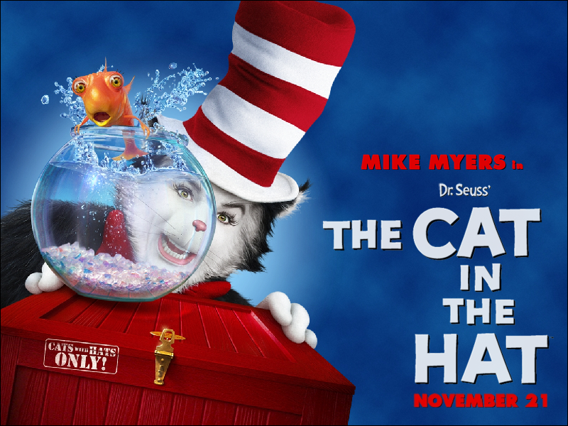

Dr. Seuss Screensavers

How the Grinch Stole Christmas (2000)

An interactive screensaver! You can take a look around Whoville with this screensaver, and press any key to exit.
DOWNLOAD
 .exe file zipped (Windows) (442 KB)
.exe file zipped (Windows) (442 KB)
.sea file (Mac OS) (548 KB)
Cat in the Hat (2003) #1

DOWNLOAD
.exe file zipped (2.42 MB)
Cat in the Hat (2003) #2

DOWNLOAD
.exe file zipped (1.85 MB)